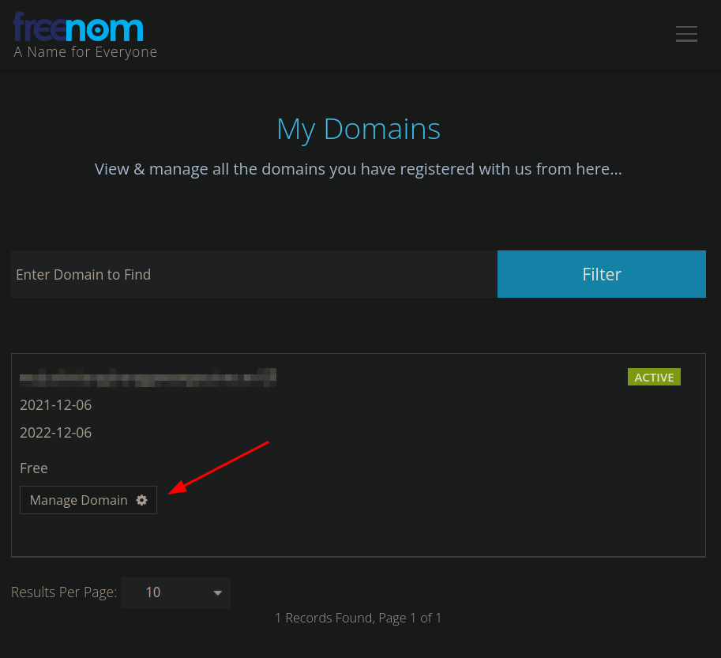
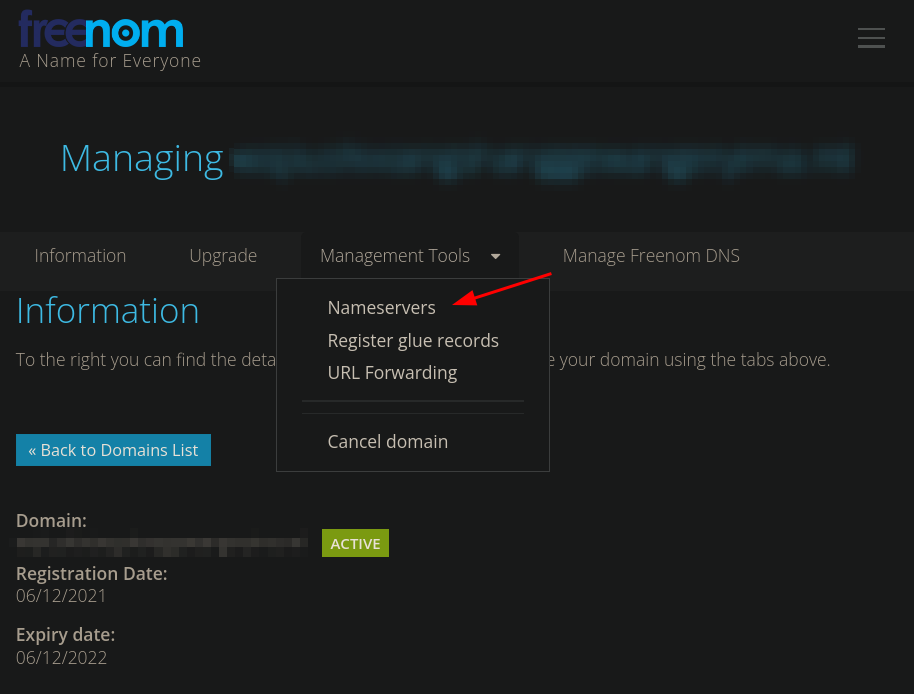
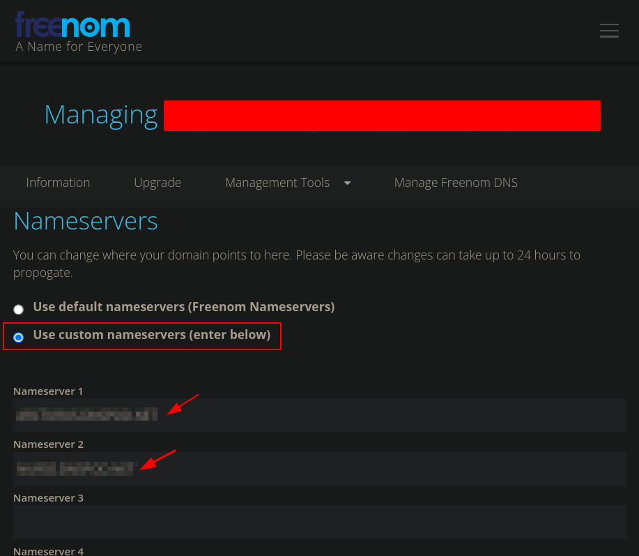
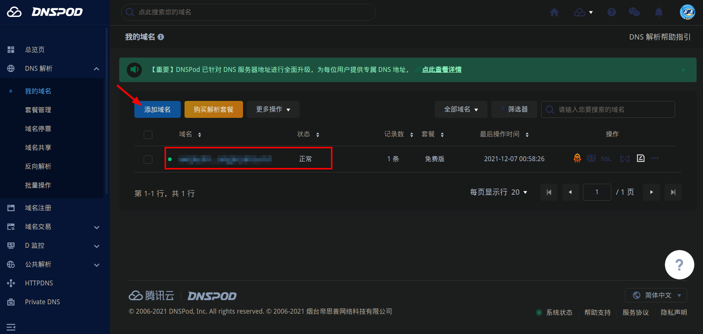

学生时代曾为整个课题组的师生搭建过一个梯子，稳定运行两年多，最近突然爬不上去了。 寻思是哪里出了问题，经过一番定位，原来是之前的免费域名到期了。遂于昨晚开启修补 之旅，无奈运气不太好，每一环节都出了问题，最终搞到凌晨3点才重新爬上了梯子。
想来主要是之前对照的教程遗失，整个流程又有很多细节，难免忘记，遂记此篇。（顺便 吐槽如今网上教程已经不胜枚举，但优质的教程却少有输出。以至于想要弄清楚某个事情 的来龙去脉，就必须博采众家所长，取其精华，弃其糟粕。有没有一个教程站出来拍拍 胸脯说：少年，你只要看我就够了Orz！当然，此篇仅是个笔记，不为服务他人，只为提醒 自己。）
V2Ray是一个较为先进的网络工具，他的用途很多，但大多数人用它来搞建筑。原理就是 你有一台可访问外网的机器A，你与该机器可以通信，在A中运行一个v2ray（充当服务端）， 在终端设备运行一个v2ray（充当客户端），然后两方配制能对得上，就可以将你访问外网 的流量转发给机器A，由A发出该请求，收到回复后还是通过A转发回给终端机。这就完成了 一次外网访问。
v2ray的难点在于配置文件1的编写，不过好在现在有很多辅助你生成配置文件的工具。 咱当初可是辛辛苦苦对着文档敲的，不贴上来太可惜了：
/// config_server.json
{
"log": {
"access": "/var/log/v2ray/access.log",
"error": "/var/log/v2ray/error.log",
"loglevel": "warning"
},
"dns": {},
"stats": {},
"inbounds": [
{
"port": 443,
"protocol": "vmess",
"settings": {
"clients": [
{
"id": "your_uuid",
"alterId": 32
}
]
},
"tag": "in-0",
"streamSettings": {
"network": "ws",
"security": "tls",
"wsSettings": {
"path": "/somepath",
"headers": {
"host": "somehost.com"
}
},
"tlsSettings": {
"certificates": [
{
"certificateFile": "/etc/v2ray/v2ray.crt",
"keyFile": "/etc/v2ray/v2ray.key"
}
]
}
}
}
],
"outbounds": [
{
"tag": "direct",
"protocol": "freedom",
"settings": {}
},
{
"tag": "blocked",
"protocol": "blackhole",
"settings": {}
}
],
"routing": {
"domainStrategy": "AsIs",
"rules": [
{
"type": "field",
"ip": [
"geoip:private"
],
"outboundTag": "blocked"
}
]
},
"policy": {},
"reverse": {},
"transport": {}
}/// config_client.json
{
"log":{},
"dns":{},
"stats":{},
"inbounds":[
{
"port":"1080",
"protocol":"socks",
"settings":{
"auth":"noauth",
"udp":true
},
"tag":"in-0"
},
{
"port":"8080",
"protocol":"http",
"settings":{},
"tag":"in-1"
}
],
"outbounds":[
{
"protocol":"vmess",
"settings":{
"vnext":[
{
"address":"your_host_address",
"port":443,
"users":[
{
"id":"your_uuid",
"alterId":32
}
]
}
]
},
"tag":"out-0",
"streamSettings":{
"network":"ws",
"security":"tls",
"wsSettings":{
"path":"/somepath",
"headers": {
"host": "somehost.com"
}
},
"tlsSettings":{
"allowInsecure": true
}
}
},
{
"tag":"direct",
"protocol":"freedom",
"settings":{}
},
{
"tag":"blocked",
"protocol":"blackhole",
"settings":{}
}
],
"routing":{
"domainStrategy":"IPOnDemand",
"rules":[
{
"type":"field",
"ip":[
"geoip:private"
],
"outboundTag":"direct"
},
{
"type":"field",
"ip":[
"geoip:cn"
],
"inboundTag":[
"in-0",
"in-1"
],
"outboundTag":"direct"
}
]
},
"policy":{},
"reverse":{},
"transport":{}
}仔细看看server的配置，其实用到了WS+TLS的方式，这样的配置隐蔽性较好，不容易被封。
但这种配置的成本也相对较高，首先得弄个域名和机器A的ip绑定。即通过ping somehost.com能够翻译成机器A的ip。
注册域名
上免费域名注册站：https://my.freenom.com/domains.php ，
随便敲一个域名，检查是否可用，注册成功后如下图所示：

 
此处需要为域名配置解析服务器，可以用腾讯云域名解析服务，下图中点击“添加域名”，配置成功后会得到两个域名解析服务器地址，将这两个地址填入上图的Nameserver1和Nameserver2中即可。

至此，一个域名到ip的绑定关系就配置完成，可以ping一下试试：
me@~> ping somehost.com
PING somehost.com (xxx.yyy.zzz.aaa) 56(84) 字节的数据。
64 字节，来自 xx.com (xxx.yyy.zzz.aaa): icmp_seq=1 ttl=52 时间=193 毫秒
--- somehost.com ping 统计 ---
已发送 4 个包， 已接收 4 个包, 0% packet loss, time 3003ms
rtt min/avg/max/mdev = 159.025/202.023/239.194/29.721 ms其中，somehost.com为之前申请的域名，xxx.yyy.zzz.aaa为机器A的ip。
证书生成
此段摘抄自https://guide.v2fly.org/advanced/tls.html#证书生成
TLS 是证书认证机制，所以使用 TLS 需要证书，证书也有免费付费的，同样的这里使用免费证书，证书认证机构为Let’s Encrypt。 证书的生成有许多方法，这里使用的是比较简单的方法：使用acme.sh脚本生成，本部分说明部分内容参考于acme.sh README。
证书有两种，一种是 ECC 证书（内置公钥是 ECDSA 公钥），一种是 RSA 证书（内置 RSA 公钥）。简单来说，同等长度 ECC 比 RSA 更安全,也就是说在具有同样安全性的情况下，ECC 的密钥长度比 RSA 短得多（加密解密会更快）。但问题是 ECC 的兼容性会差一些，Android 4.x 以下和 Windows XP 不支持。只要您的设备不是非常老的老古董，建议使用 ECC 证书。
以下只给出 ECC 证书的部分。
证书生成只需在服务器上操作。
安装 acme.sh
执行以下命令，acme.sh 会安装到 ~/.acme.sh 目录下。
$ curl https://get.acme.sh | sh
% Total % Received % Xferd Average Speed Time Time Time Current
Dload Upload Total Spent Left Speed
100 671 100 671 0 0 680 0 --:--:-- --:--:-- --:--:-- 679
% Total % Received % Xferd Average Speed Time Time Time Current
Dload Upload Total Spent Left Speed
100 112k 100 112k 0 0 690k 0 --:--:-- --:--:-- --:--:-- 693k
[Fri 30 Dec 01:03:32 GMT 2016] Installing from online archive.
[Fri 30 Dec 01:03:32 GMT 2016] Downloading https://github.com/Neilpang/acme.sh/archive/master.tar.gz
[Fri 30 Dec 01:03:33 GMT 2016] Extracting master.tar.gz
[Fri 30 Dec 01:03:33 GMT 2016] Installing to /home/user/.acme.sh
[Fri 30 Dec 01:03:33 GMT 2016] Installed to /home/user/.acme.sh/acme.sh
[Fri 30 Dec 01:03:33 GMT 2016] Installing alias to '/home/user/.profile'
[Fri 30 Dec 01:03:33 GMT 2016] OK, Close and reopen your terminal to start using acme.sh
[Fri 30 Dec 01:03:33 GMT 2016] Installing cron job
no crontab for user
no crontab for user
[Fri 30 Dec 01:03:33 GMT 2016] Good, bash is found, so change the shebang to use bash as preferred.
[Fri 30 Dec 01:03:33 GMT 2016] OK
[Fri 30 Dec 01:03:33 GMT 2016] Install success!如果安装报错，那么可能是因为系统缺少 acme.sh 所需要的依赖项，acme.sh 的依赖项主要是 socat，我们通过以下命令来安装这些依赖项，然后重新安装一遍 acme.sh:
$ sudo apt-get install openssl cron socat curl使用 acme.sh 生成证书
证书生成
执行以下命令生成证书：
以下的命令会临时监听 80 端口，请确保执行该命令前 80 端口没有使用
$ ~/.acme.sh/acme.sh --issue -d mydomain.me --standalone --keylength ec-256 --force
[Fri Dec 30 08:59:12 HKT 2016] Standalone mode.
[Fri Dec 30 08:59:12 HKT 2016] Single domain='mydomain.me'
[Fri Dec 30 08:59:12 HKT 2016] Getting domain auth token for each domain
[Fri Dec 30 08:59:12 HKT 2016] Getting webroot for domain='mydomain.me'
[Fri Dec 30 08:59:12 HKT 2016] _w='no'
[Fri Dec 30 08:59:12 HKT 2016] Getting new-authz for domain='mydomain.me'
[Fri Dec 30 08:59:14 HKT 2016] The new-authz request is ok.
[Fri Dec 30 08:59:14 HKT 2016] mydomain.me is already verified, skip.
[Fri Dec 30 08:59:14 HKT 2016] mydomain.me is already verified, skip http-01.
[Fri Dec 30 08:59:14 HKT 2016] mydomain.me is already verified, skip http-01.
[Fri Dec 30 08:59:14 HKT 2016] Verify finished, start to sign.
[Fri Dec 30 08:59:16 HKT 2016] Cert success.
-----BEGIN CERTIFICATE-----
MIIEMTCCAxmgAwIBAgISA1+gJF5zwUDjNX/6Xzz5fo3lMA0GCSqGSIb3DQEBCwUA
MEoxCzAJBgNVBAYTAlVTMRYwFAYDVQQKEw1MZXQncyBFbmNyeXB0MSMwIQYDVQQD
ExpMZXQncyBFbmNyeXB0IEF1dGhvcml0eSBYMzAeFw0xNjEyMjkyMzU5MDBaFw0x
NzAzMjkyMzU5MDBaMBcxFTATBgNVBAMTDHdlYWtzYW5kLmNvbTBZMBMGByqGSM49
****************************************************************
4p40tm0aMB837XQ9jeAXvXulhVH/7/wWZ8/vkUUvuHSCYHagENiq/3DYj4a85Iw9
+6u1r7atYHJ2VwqSamiyTGDQuhc5wdXIQxY/YQQqkAmn5tLsTZnnOavc4plANT40
zweiG8vcIvMVnnkM0TSz8G1yzv1nOkruN3ozQkLMu6YS7lk/ENBN7DBtYVSmJeU2
VAXE+zgRaP7JFOqK6DrOwhyE2LSgae83Wq/XgXxjfIo1Zmn2UmlE0sbdNKBasnf9
gPUI45eltrjcv8FCSTOUcT7PWCa3
-----END CERTIFICATE-----
[Fri Dec 30 08:59:16 HKT 2016] Your cert is in /root/.acme.sh/mydomain.me_ecc/mydomain.me.cer
[Fri Dec 30 08:59:16 HKT 2016] Your cert key is in /root/.acme.sh/mydomain.me_ecc/mydomain.me.key
[Fri Dec 30 08:59:16 HKT 2016] The intermediate CA cert is in /root/.acme.sh/mydomain.me_ecc/ca.cer
[Fri Dec 30 08:59:16 HKT 2016] And the full chain certs is there: /root/.acme.sh/mydomain.me_ecc/fullchain.cer--keylength 表示密钥长度，后面的值可以是 ec-256 、ec-384、2048、3072、4096、8192，带有 ec 表示生成的是 ECC 证书，没有则是 RSA 证书。在安全性上 256 位的 ECC 证书等同于 3072 位的 RSA 证书。
证书更新
由于 Let’s Encrypt 的证书有效期只有 3 个月，因此需要 90 天至少要更新一次证书，acme.sh 脚本会每 60 天自动更新证书。也可以手动更新。
手动更新证书，执行：
$ ~/.acme.sh/acme.sh --renew -d mydomain.com --force --ecc由于本例中将证书生成到 /etc/v2ray/ 文件夹，更新证书之后还得把新证书生成到 /etc/v2ray。
安装证书和密钥
将证书和密钥安装到 /etc/v2ray 中：
$ sudo ~/.acme.sh/acme.sh --installcert -d mydomain.me --ecc \
--fullchain-file /etc/v2ray/v2ray.crt \
--key-file /etc/v2ray/v2ray.key注意：无论什么情况，密钥(即上面的 v2ray.key)都不能泄漏，如果你不幸泄漏了密钥，可以使用 acme.sh 将原证书吊销，再生成新的证书，吊销方法请自行参考acme.sh 的手册
摘抄完毕。
启动
在机器A上执行
$ /usr/bin/v2ray/v2ray
V2Ray 4.44.0 (V2Fly, a community-driven edition of V2Ray.) Custom (go1.17.3 linux/amd64)
A unified platform for anti-censorship.
2021/12/11 00:22:25 Using config from env: /usr/bin/v2ray/config.json
2021/12/11 00:22:25 [Info] main/jsonem: Reading config: /usr/bin/v2ray/config.json
2021/12/11 00:22:26 [Warning] V2Ray 4.44.0 started但是这样会占用终端，虽然可以让它后台运行，但始终不优雅。我们可以将v2ray做成一项system service.
编写服务单元文件2:
# file:///etc/systemd/system/v2ray.service
[Unit]
Description=V2Ray Service
After=network.target
Wants=network.target
[Service]
# This service runs as root. You may consider to run it as another user for security concerns.
# By uncommenting the following two lines, this service will run as user v2ray/v2ray.
# More discussion at https://github.com/v2ray/v2ray-core/issues/1011
# User=v2ray
# Group=v2ray
Type=simple
PIDFile=/run/v2ray.pid
Environment=V2RAY_LOCATION_ASSET=/etc/v2ray
ExecStart=/usr/bin/v2ray/v2ray -config /etc/v2ray/config.json
Restart=on-failure
# Don't restart in the case of configuration error
RestartPreventExitStatus=23
[Install]
WantedBy=multi-user.target这样一来可以使用systemctl来管理其启动和关闭，使用
systemctl start v2ray # 启动
systemctl restart v2ray # 重新启动
systemclt stop v2ray # 停止
systemctl enable/disable v2ray # 设置是否开机启动
systemctl status v2ray # 查看服务运行情况暂时写到这里，客户端连接，以及服务器安装等，网上教程较多，不再赘述。因原教程被ban，故摘录部分，有条件的推荐去看原教程，十分详细！